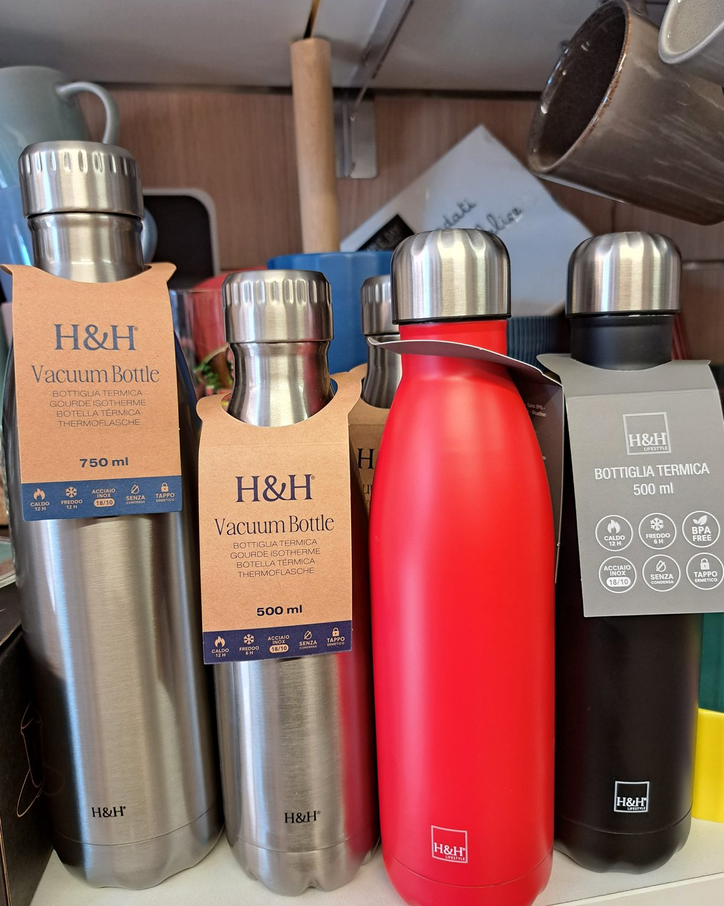
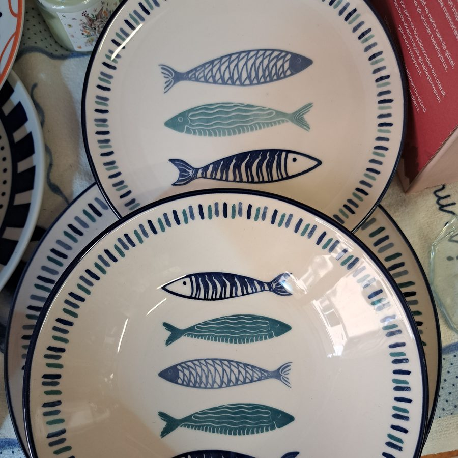
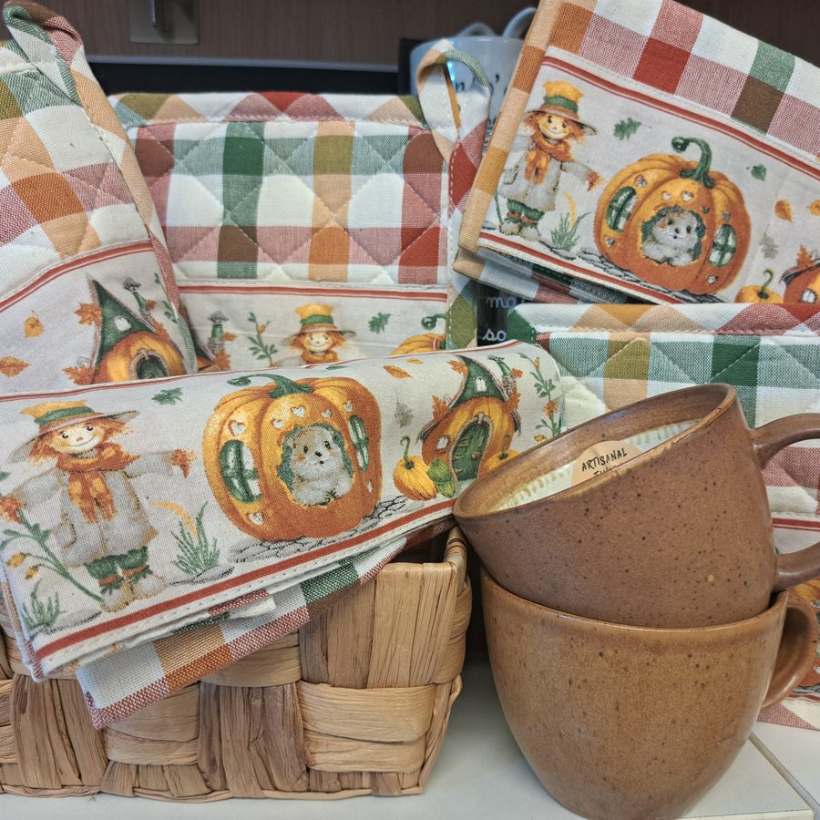
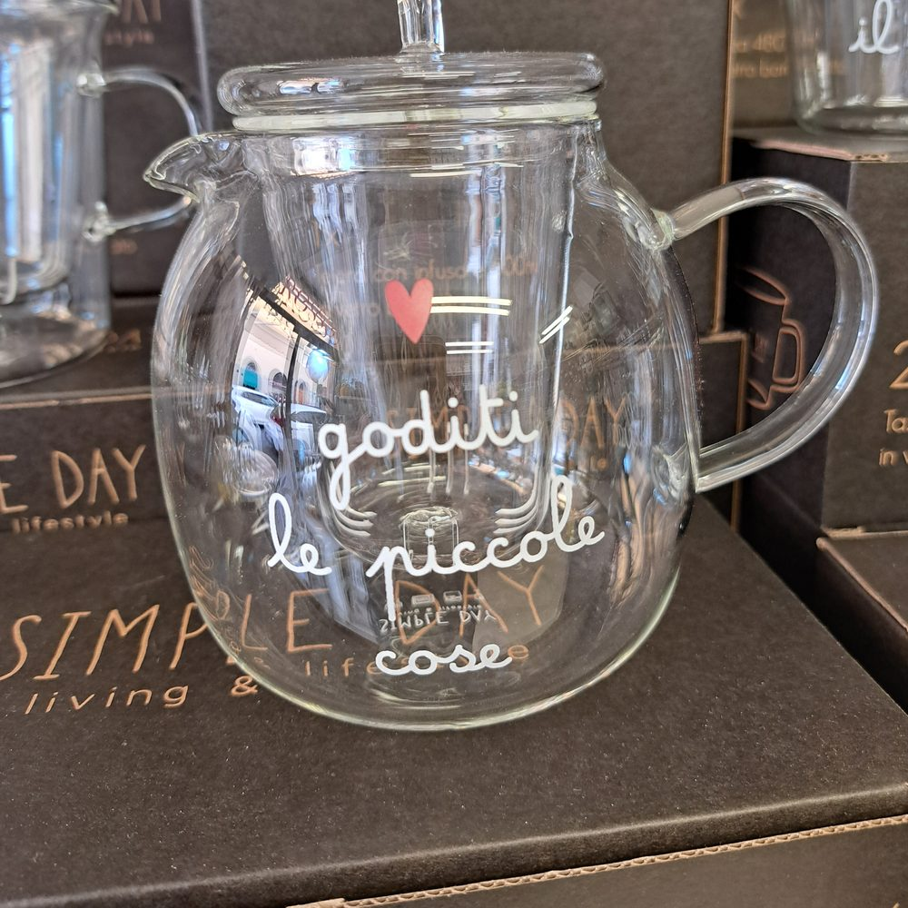
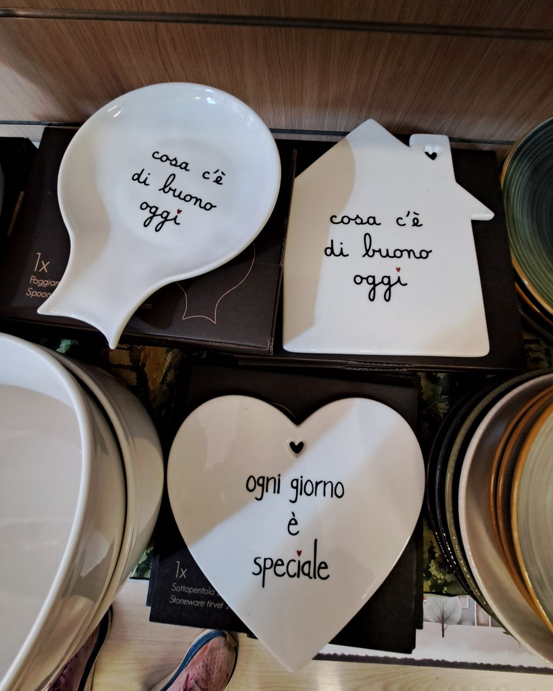

Dallo scaffale
Poche cose, ben scelte.
Dalla cucina alla porta di casa: oggetti che si usano ogni giorno, con qualche frase scritta a mano e molto rosso. [Testo da approvare]


Un biscotto tira l'altro.Le frasi scritte a mano su vetro e ceramica sono della linea Simple Day.





